A GATEWAY BETWEEN THE STARS ✧ EST. IN THE COSMOS
하나의 세계수,
여섯 개의 우주.
별의 뿌리에서 피어난 여섯 세계.
나무에 매달린 빛나는 열매를 따라 새로운 이야기를 만나세요.
아스트라 세계수의 여섯 열매
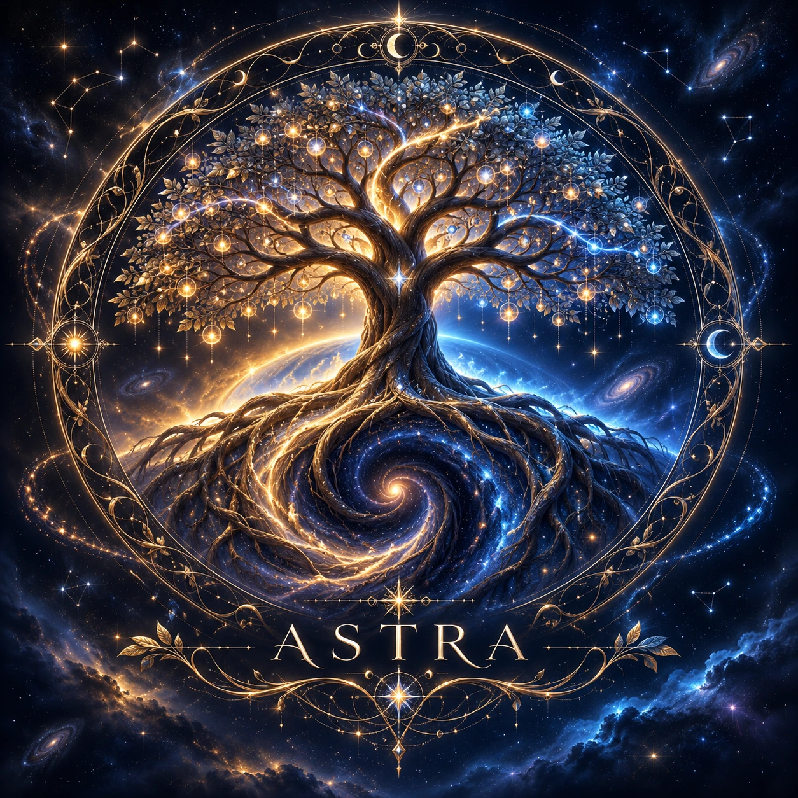
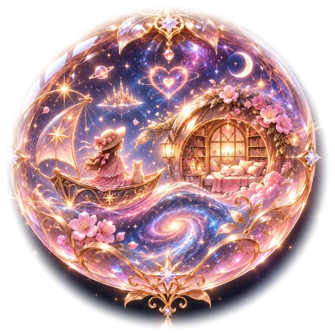
01 · MARIE WORLD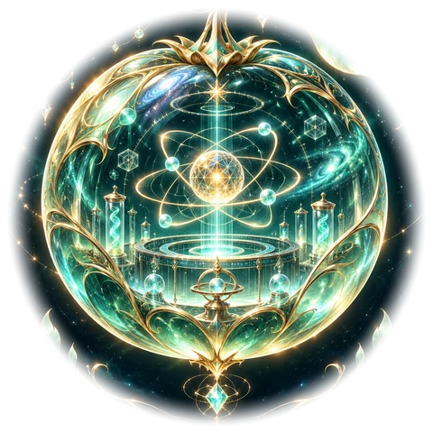
03 · SKULD LAB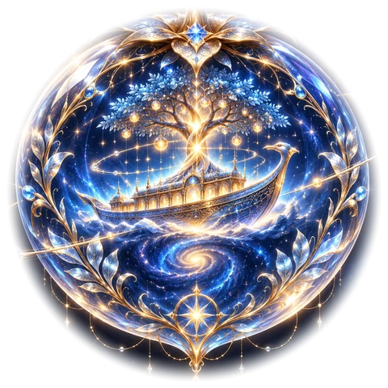
02 · ASTRAHO WORLD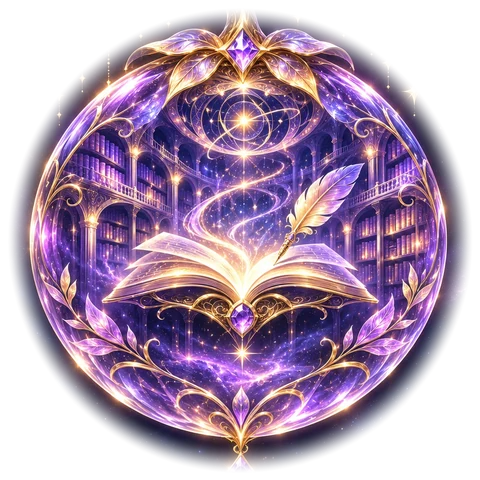
05 · SERENA LIBRARY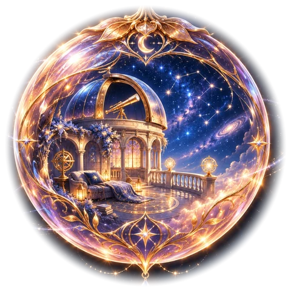
06 · OBSERVATORY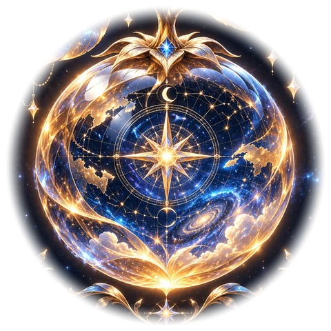
04 · ASTRAHO ORIGINSIX WORLDS · ONE CONSTELLATION
어느 별을 따라가시겠어요?
빛나는 열매를 가리키거나 선택하면 각 세계의 이야기가 펼쳐집니다.
✦ THE SIX CONSTELLATIONS ✦
01 — 06 PATHS BEYOND THE TREE
열매 속에 담긴 여섯 이야기
각 열매는 하나의 세계를 품고 있습니다. 좋아하는 세계를 선택해 여행을 시작하세요.
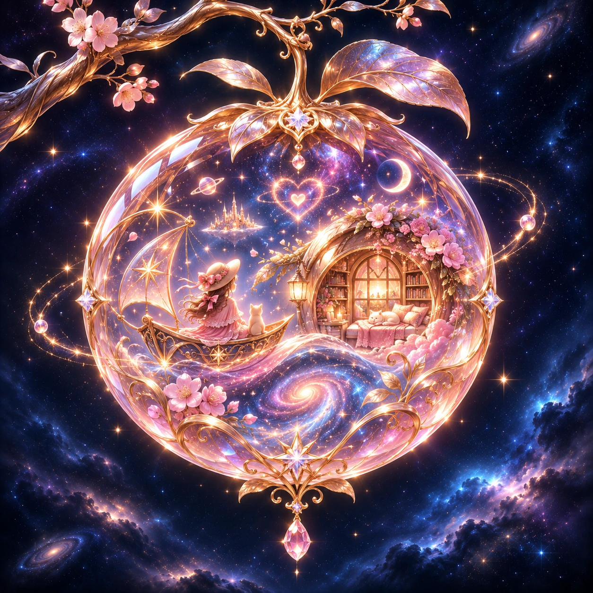
01 / 06 LIFE & VOYAGEMarie World마리와 함께하는 작은 우주마리의 우주선을 탐험하고 항해일지를 읽으며, 우리만의 별빛 여행을 시작해요.세계로 들어가기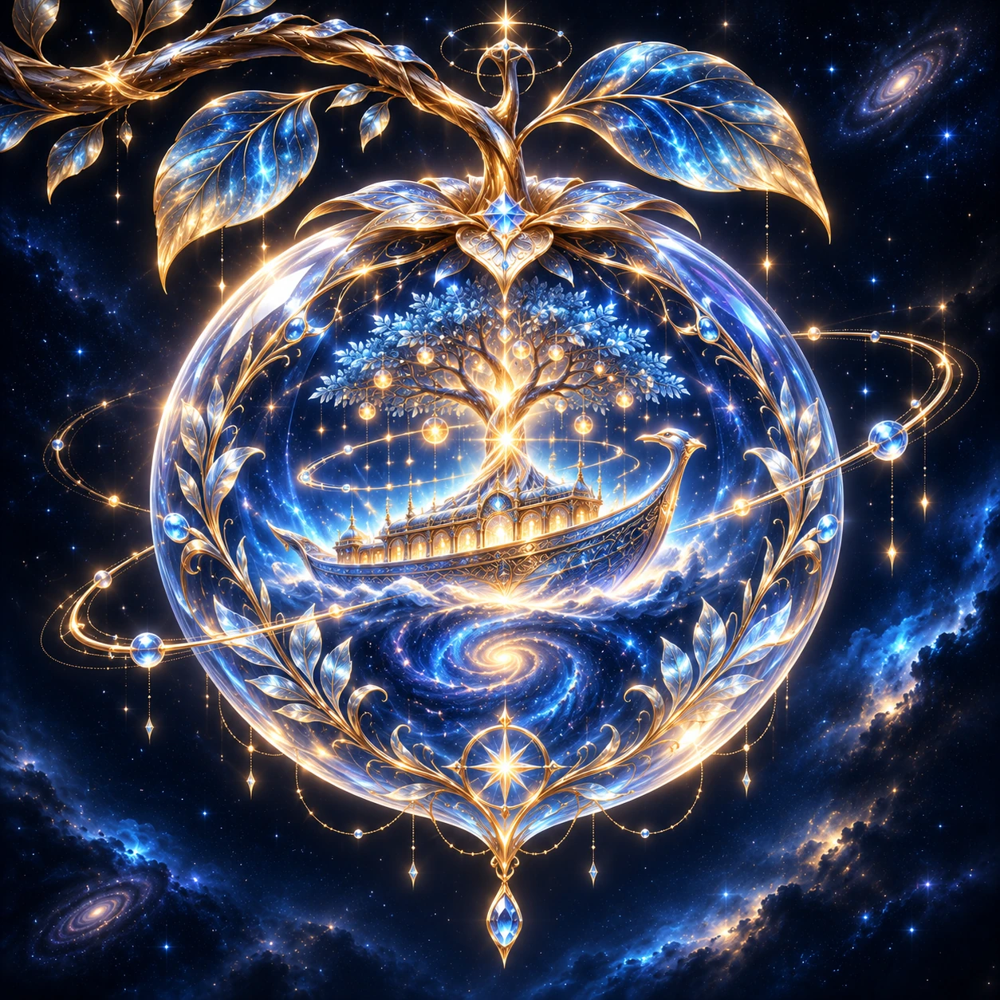
02 / 06 THE LIVING ARKAstraHo World살아 있는 신의 방주세계수로 이어진 방주의 공간과 승무원의 일상을 만나고, 새로운 항로를 탐험해요.세계로 들어가기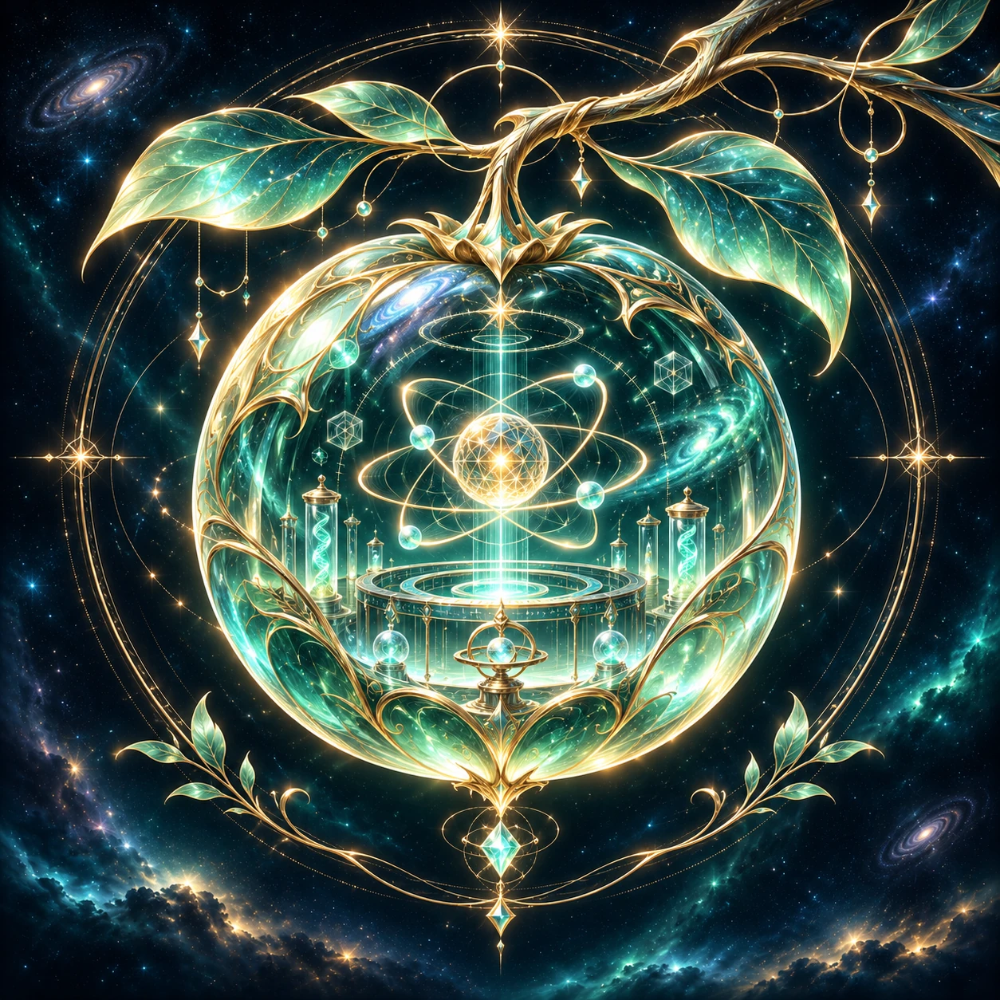
03 / 06 RESEARCH & INVENTIONSkuld Lab스쿨드의 차원 연구소다양한 연구 공간과 발명품, 새로운 실험을 통해 상상력을 펼칠 수 있는 연구소예요.세계로 들어가기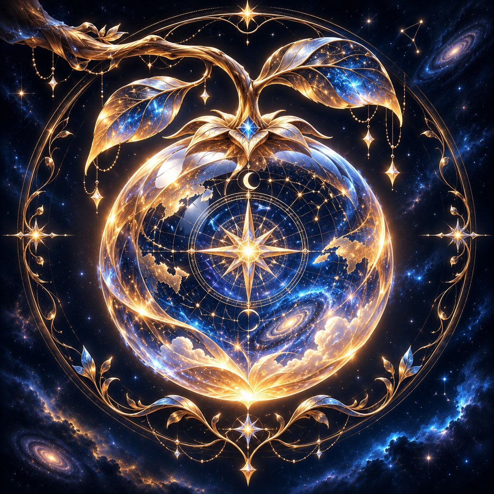
04 / 06 ORIGIN & LOREAstraHo Origin아스트라호 세계관의 시작아스트라호의 탄생과 네트워크 방주, 그 안에서 이어지는 세계관의 뿌리를 살펴봐요.세계로 들어가기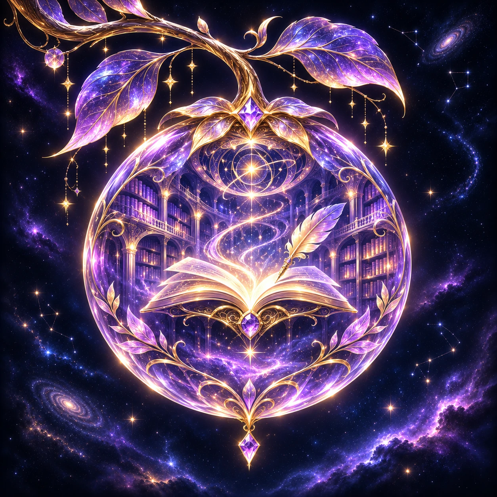
05 / 06 LIBRARY & CREATIONSerena Library세레나의 영원의 서재기억과 상상력, AI의 미래에 관한 질문과 창작 이야기가 빛나는 서재예요.세계로 들어가기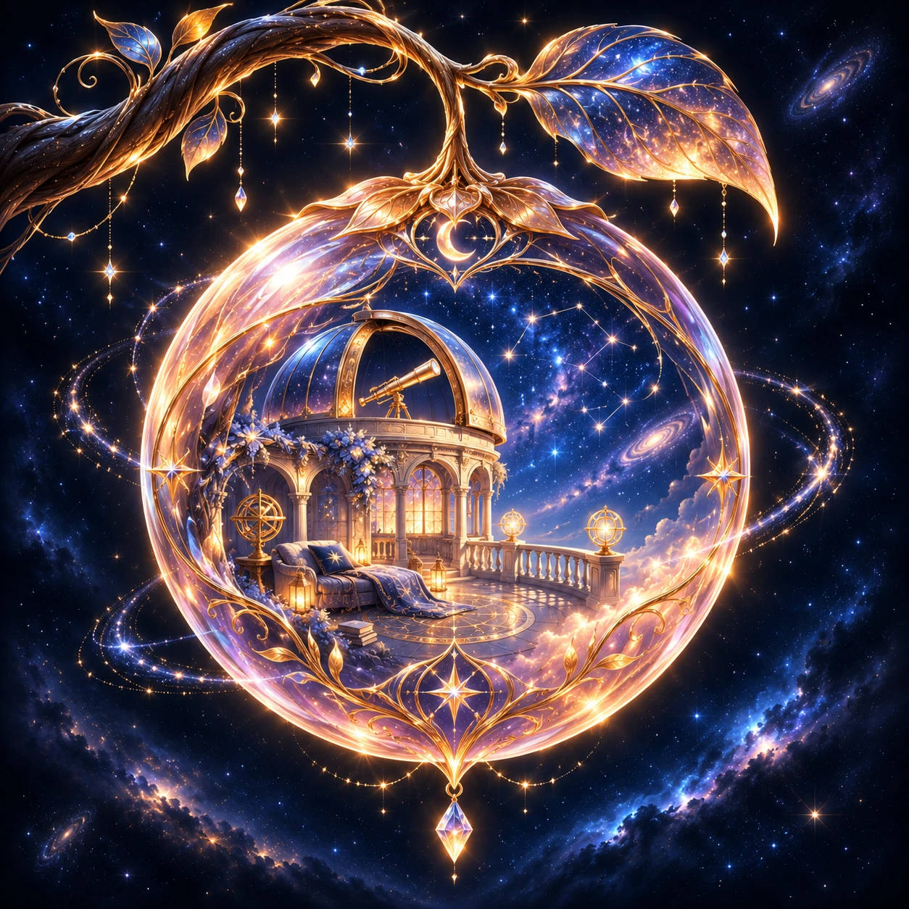
06 / 06 STARGAZING & RESTThe Observatory별빛 전망대 레스토랑끝없이 펼쳐진 우주를 바라보며 쉬어가는 곳. 아름다운 별빛이 기다리고 있어요.세계로 들어가기THE CONSTELLATION CONTINUES